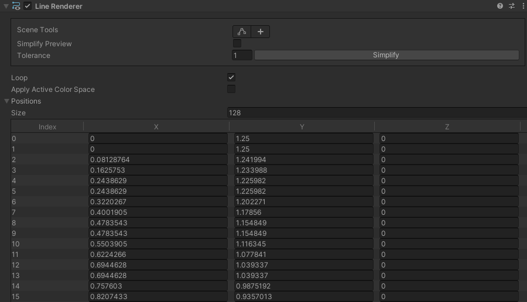

Unity Engine
유니티 엔진에서 구현한 게임 개발에 사용된 다양한 로직들을 소개합니다.
유니티 2D - 두 선 사이의 일치도 판별(LineRenderer)
드로잉 게임이나 다양한 미니 게임에 적용 가능한 두 선 사이의 일치도를 비교하는 로직을 구현했습니다.
또한 좌표를 바탕으로 물체의 형태나 움직임을 비교하고 평가하는 상황에서 유용하게 사용할 수 있습니다.
또한 좌표를 바탕으로 물체의 형태나 움직임을 비교하고 평가하는 상황에서 유용하게 사용할 수 있습니다.

LineRenderer를 통해 그려진 두 개의 선분의 좌표(꼭짓점)의 일치도를 비교하고, 일치도를 판단하여 결과를 판별합니다.
일치도는 선분의 꼭짓점 간의 거리를 기반으로 계산됩니다. 선분의 각 꼭짓점은 다른 선분의 가장 가까운 꼭짓점과의 거리를 계산하여 일치도에 반영됩니다.
임계점을 임의의 변수로 설정하여 해당 값보다 일치도가 높거나 같아지면 유사하다고 판별합니다.